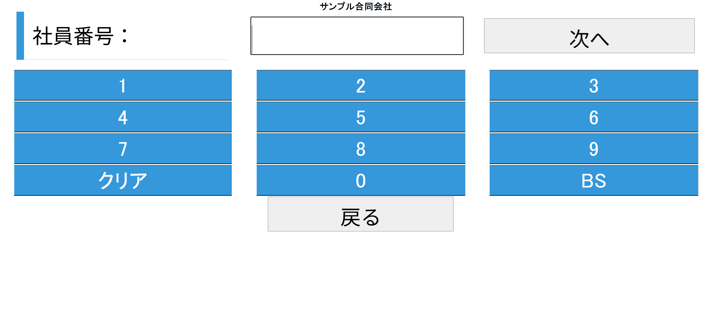
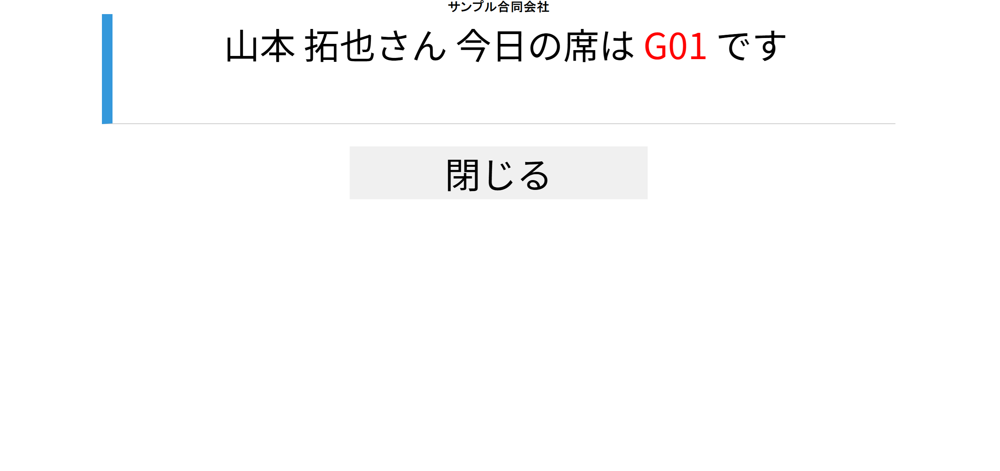
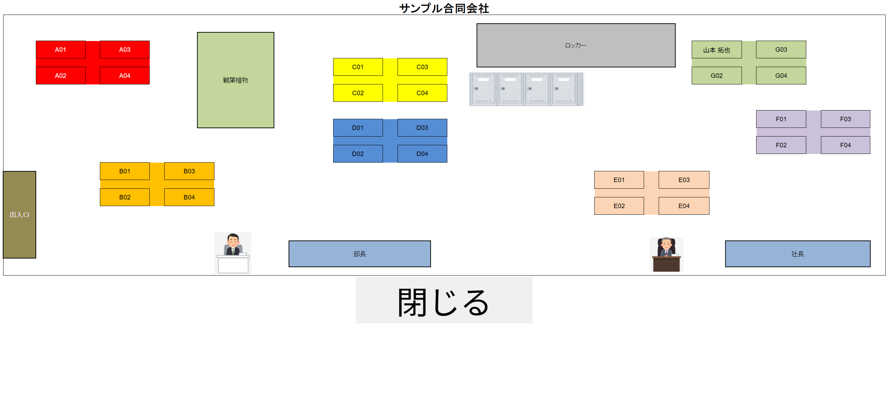
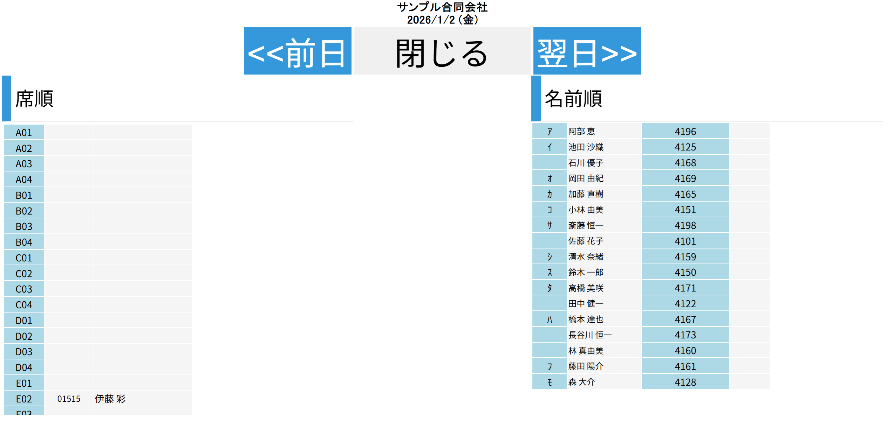

使い方ガイド
FreeAddressの基本的な使い方をご紹介します
利用イメージ
出社
→
入口の
タブレットで
抽選
タブレットで
抽選
→
今日の席が
決定
決定
→
席に着いて
仕事開始
仕事開始
入口
社員
➡️
A1
A2
A3
B1
B2
B3
広告スペース
🎲 座席抽選
毎日の座席を抽選で決定します。出社時にこの操作を行ってください。
メニューから「フリーアドレスの抽選を行う」をタップ
オレンジ色の大きなボタンを押します。
社員番号を入力
テンキーで自分の社員番号を入力します。

社員番号入力画面
「次へ」をタップ
社員番号を入力したら「次へ」ボタンを押します。
抽選結果を確認
あなたの今日の座席が表示されます。

抽選結果画面（例：G01席）
入力を間違えた場合は「クリア」で全消去、「BS」で1文字削除できます。
1日1回のみ抽選できます。一度抽選した座席は変更できませんのでご注意ください。
広告スペース
🗺️ 座席表を見る
オフィスの座席配置を確認できます。誰がどの席に座っているかが一目でわかります。
メニューから「座席表を見る」をタップ
緑色のボタンを押します。
座席表を確認
オフィスのレイアウトが表示されます。

座席表画面
座席表の見方
- 座席番号（A01, B02など）が各席に表示されます
- 着席中の席には、座っている人の名前が表示されます
- 空席は座席番号のみ表示されます
- 固定席（部長、社長など）は別途表示されます
座席表は抽選後にリアルタイムで更新されます。
✅ 着席を確認する
誰がどの席に座っているか、リスト形式で確認できます。
メニューから「着席を確認する」をタップ
緑色のボタンを押します。
一覧を確認
席順・名前順で並べ替えて確認できます。

着席確認画面
画面の見方
- 席順：座席番号順に表示（左側）
- 名前順：社員名の順に表示（右側）
- 前日/翌日：日付を切り替えて確認できます
特定の人を探すときは「名前順」が便利です。
🚶 外出（離席）登録
外出や会議などで席を長時間離れる場合、席を開放して他の人が使えるようにします。
メニューから「外出（席を開放する）」をタップ
紫色のボタンを押します。
社員番号を入力
テンキーで自分の社員番号を入力します。

外出登録画面（赤いテンキー）
「次へ」をタップして完了
席が開放され、座席表から名前が消えます。
外出登録をすると、その日の座席が無効になります。再抽選はできませんので、本当に席を開放してよいか確認してから実行してください。
🔍 席・内線を確認する
社員の席や内線番号を検索できます。電話を取り次ぐ時などに便利です。
メニューから「席を確認する」をタップ
青色のボタンを押します。
社員を検索
名前や社員番号で検索して、席と内線番号を確認できます。
よく連絡を取る相手の内線番号は、この機能で確認できます。
広告スペース
❓ よくある質問
Q. 抽選をやり直したい場合は？
申し訳ありませんが、1日1回のみの抽選となっており、やり直しはできません。どうしても席を変更したい場合は管理者にご相談ください。
Q. 座席表に自分の名前が表示されない
抽選が完了していない可能性があります。まだ抽選していない場合は「フリーアドレスの抽選を行う」から抽選してください。既に抽選済みの場合は管理者にお問い合わせください。
Q. 社員番号を忘れた
管理者にお問い合わせください。
Q. 特定の席に座りたい
フリーアドレス制のため、座席は抽選で決まります。ただし、管理者が固定席を設定している場合はその席が割り当てられます。